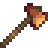
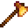
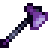

Axes
The Axe is a tool used to chop branches, trees and small stumps, as well as for removing or harvesting certain objects, especially important for obtaining Wood. An axe may also be used as a weapon to inflict a small amount of damage. An axe is required to harvest Giant Crops.
The basic Axe is obtained at the beginning of the game. It can be upgraded at the Blacksmith. The cost and resource requirements for each upgrade are shown in the table below.
When upgraded, the axe can be used to chop down large stumps and eventually large logs that grant Hardwood. The Steel Axe is required to remove the large log that blocks the entrance to the Secret Woods.
On the Riverlands, Forest, Hill-top and Beach Farm Maps, some bushes can be destroyed with a Copper Axe (or better).[1]
Grades of Axe
| Image | Name | Cost | Ingredients | Improvements |
|---|---|---|---|---|
| Axe | Starter Tool | N/A | 10 hits to chop a fully-grown tree, and 5 hits for a small stump. | |
 |
Copper Axe | Can chop Large Stumps. 8 hits to chop a fully-grown tree, and 4 hits for a small stump. | ||
| Steel Axe | Can chop Large Logs. 6 hits to chop a fully-grown tree, and 3 hits for a small stump. 3 hits for a stage 4 tree, and 2 hits for a stage 3 tree and below. | |||
 |
Gold Axe | 4 hits to chop a fully-grown tree, and 2 hits for a small stump. 2 hits for a stage 4 tree, and one hit for a stage 3 tree and below. | ||
 |
Iridium Axe | 2 hits to chop a fully-grown tree, and 1 hit for a small stump. 1 hit for a stage 4 tree and below. |
Energy Cost
- See Proficiency
Notes
- An axe given the Powerful enchantment at the Forge can remove Large Stumps and Large Logs, regardless of its upgrade level.
References
- ↑ See Bush::isDestroyable in the game code.
History
| Tools | |
|---|---|
| Basic | Axes • Golden Scythe • Iridium Scythe • Hoes • Pans • Pickaxes • Scythe • Trash Cans • Watering Cans |
| Fishing | Training Rod • Bamboo Pole • Fiberglass Rod • Iridium Rod • Advanced Iridium Rod • Crab Pot |
| Other | Auto-Grabber • Auto-Petter • Hay Hopper • Heater • Incubator • Milk Pail • Ostrich Incubator • Shears |